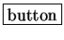

Next: Online Support and Downloading
Up: Introduction
Previous: Introduction
Contents
Within this documentation, we have tried to improve the readability of the
text by using certain styles and fonts. Any reference to Matlab code appears in monospace. Commands written at the Matlab
commandline will have the Matlab prompt included on the left-hand side,
for example,
>> help strfpak
Any reference to a particular  in the STRFPAK GUI will have
a box around it, while Window Titles and Subwindow Menus will be
shown in bold.
2004-08-09